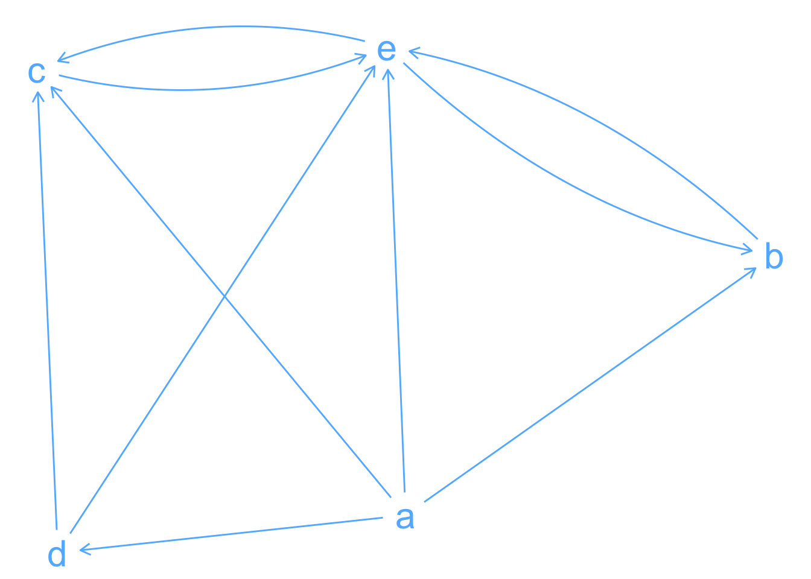

rowSums(M)a b c d e
4 1 1 2 2 igraph::degree(net, mode = "out")a b c d e
4 1 1 2 2 Note. The igraph package is used for the examples below.
Any model we construct, be it of a market, the spread of a disease, or the transmission of information, can be enriched by embedding the actors in a network.
Page (2018, 117)
A network is a representation of a system that contains discrete, interconnected elements. The elements are represented by nodes (or vertices), and the interconnections are represented by edges (or ties).
Edges may have attributes like distance or monetary transactions—i.e., weights. They may also be directed or undirected, depending on whether the relationships they represent are asymmetric or symmetric.
Many real-world problems can be solved using graph algorithms. For example, Dijkstra’s shortest path algorithm is an efficient way to find the shortest path from a node to all other nodes in a graph.
Formal Presentation
A graph is a mathematical object that consists of a set of \(V\) of vertices (or nodes) and a multiset \(E\) of pairs of elements in \(V\). It encodes relational information (or connections).
\[ G = \{V, E\} \]
When two nodes \(a\) and \(b\) are connected, \(\{a, b\} \in E\), we call them adjacent.
We can also represent a graph as an adjacency matrix \(\mathbf{M}\) such that each entry \(m_{ij}\) is zero when \(\{i, j\} \not \in E\).
\[ m_{ij} = \begin{cases} 1 &\text{if } (v_i, v_j) \in E \\ 0 &\text{if } (v_i, v_j) \not \in E \end{cases} \]
# Adj. Matrix
set.seed(1111)
n <- 5
M <- array(
data = sample(1:0, size = n*n, replace = TRUE),
dim = c(n, n),
dimnames = list(letters[1:n], letters[1:n])
)
diag(M) <- 0
knitr::kable(M) |>
kableExtra::kable_styling()
# Graph
library(igraph)
library(ggraph)
net <- igraph::graph_from_adjacency_matrix(M, mode = "directed")
net |>
ggraph() +
geom_node_text(aes(label = name), color = "steelblue1", size = 8) +
geom_edge_fan(
arrow = arrow(length = unit(0.25, "cm")),
end_cap = circle(.5, "cm"),
start_cap = circle(.5, "cm"),
colour = "steelblue1"
) +
theme_void()| a | b | c | d | e | |
|---|---|---|---|---|---|
| a | 0 | 1 | 1 | 1 | 1 |
| b | 0 | 0 | 0 | 0 | 1 |
| c | 0 | 0 | 0 | 0 | 1 |
| d | 0 | 0 | 1 | 0 | 1 |
| e | 0 | 1 | 1 | 0 | 0 |

The matrix representation is better suited for calculating all sorts of network statistics. In what follows, we will refer to these objects as M and net respectively.
Degree
This measure captures the number of ties for each node. When we look at directed graphs, we need to distinguish between two types of degrees:
outdegree: the number of ties sent from node \(i\)
rowSums(M)a b c d e
4 1 1 2 2 igraph::degree(net, mode = "out")a b c d e
4 1 1 2 2 indegree: the number of ties received by node \(i\)
colSums(M)a b c d e
0 2 3 1 4 igraph::degree(net, mode = "in")a b c d e
0 2 3 1 4 The degree distribution tells us if some nodes are more connected than others. Social networks usually have more equal distributions than networks connecting websites or citations among documents, all of which have long tails.
Neighbors
The set of nodes in \(u\)’s neighborhood is usually depicted as \(N_u\) and \(|N_u|\) represents the number of nodes in that neighborhood.
igraph::neighbors(net, v = "a")+ 4/5 vertices, named, from 4ef57b9:
[1] b c d eigraph::neighborhood(net)[[1]]
+ 5/5 vertices, named, from 4ef57b9:
[1] a b c d e
[[2]]
+ 3/5 vertices, named, from 4ef57b9:
[1] b a e
[[3]]
+ 4/5 vertices, named, from 4ef57b9:
[1] c a d e
[[4]]
+ 4/5 vertices, named, from 4ef57b9:
[1] d a c e
[[5]]
+ 5/5 vertices, named, from 4ef57b9:
[1] e a b c dNote that the igraph::neighborhood() function includes \(u\) among \(N_u\).
Local Clustering Coefficient
The clustering coefficient of \(u\) is the percentage of \(u\)’s pairs of neighbors that are also connected by a tie—e.g., if \(u\) has a neighborhood of size 10, then it has \({10 \choose 2} = 45\) pairs of friends; if 15 of those 45 pairs are themselves connected, then \(u\)’s clustering coefficient equal \(\frac{1}{3}\).
I don’t know about the following equations…
Frequency Interpretation:
\[ C_u = \frac{| \{{v, w \in N_u \mid (v, w) \in E} \}|}{|N_u| \times (|N_u| - 1)} \]
Probability Interpretation:
Betweenness
Betweennnes. The number of paths of minimal length connecting two other nodes that pass through one node.
The average length between nodes gets shorter as we add more edges to a graph.
Density
This measure captures the total number of edges (or ties) in the network, divided by the total number of possible edges.
Getting to the total number of possible edges requires a little bit of combinatorics:
Possible edges in an undirected network
\[ {n \choose 2} = \frac{n!}{(n - 2)! 2!} = \frac{n (n-1)}{2} \]
Possible edges in a directed network
\[ \underbrace{P(n, 2)}_\text{permutation} = \frac{n!}{(n-2)!} = n(n-1) \]
Possible edges in an undirected network (loops allowed)
\[ {n \choose 2} + \underbrace{n}_\text{diagonal} = \frac{n (n-1)}{2} + n \]
Possible edges in a directed network (loops allowed)
\[ P(n, 2) + \underbrace{n}_\text{diagonal} = n(n-1) + n \]
Thus, the density of a graph \(G = \{V, E\}\) is simply:
\[ \text{density}(G_n) = \frac{|E|}{|V| \cdot (|V| - 1)} \]
Here is how we perform such a calculation:
n_nodes <- igraph::gorder(net)
n_edges <- igraph::gsize(net)
n_possible_edges <- n_nodes * (n_nodes - 1)
## density
n_edges / n_possible_edges[1] 0.5igraph::edge_density(net)[1] 0.5Walks
Any sequence of edges that connect \(i\) to \(j\). For example, the following sequence is a walk of length 4 from \(i\) to \(j\):
\[ i \to k \to l \to k \to j \]
By raising the adjacency matrix to the nth power, we get the number of walks of length \(n\) between all \(i,j\) pairs.
walks <- function(M, n) {
stopifnot(n >= 0, nrow(M) == ncol(M))
if (n == 0) {
diag(nrow(M))
} else{
Reduce(`%*%`, rep(list(M), n))
}
}
## number of walks of length 3
walks(M, 3) a b c d e
a 0 3 3 0 3
b 0 0 0 0 2
c 0 0 0 0 2
d 0 1 1 0 2
e 0 2 2 0 0M %*% M %*% M a b c d e
a 0 3 3 0 3
b 0 0 0 0 2
c 0 0 0 0 2
d 0 1 1 0 2
e 0 2 2 0 0Paths
Path length. The minimum number of edges that must be traversed to get from one node to another.
Any sequence of edges that connect \(i\) to \(j\), where a path is not allowed to revisit the same node twice (unlike walks). We use the igraph::distances() function to get the shortest path (or distance) between every node. The mode = "out" argument says we want the distance from \(i\) to \(j\), which is what we typically want.
dist_mat <- igraph::distances(net, mode = "out")
dist_mat a b c d e
a 0 1 1 1 1
b Inf 0 2 Inf 1
c Inf 2 0 Inf 1
d Inf 2 1 0 1
e Inf 1 1 Inf 0Here, we can see there is at least one path of length 2 between \(c\) and \(b\). Note that Inf means that \(i\) cannot reach \(j\) through any path. To get the specific paths connecting \(i\) to \(j\) we can use the all_shortest_paths() function.
igraph::all_shortest_paths(net, from = "d", to = "b", mode = "out")$res
$res[[1]]
+ 3/5 vertices, named, from 4ef57b9:
[1] d e b
$nrgeo
[1] 0 1 1 1 1It’s often the case that we want to summarize the distance over all \(i,j\) pairs. We can calculate this using the distance matrix calculated above.
diag(dist_mat) <- NA # remove the elements in the diagonal
mean(dist_mat[dist_mat != Inf], na.rm = TRUE) # # remove Inf values[1] 1.230769Thus, we see that nodes are (on average) separated by paths of length 1.23 (excluding pairs that cannot reach each other).
Note that we also remove all Inf values, which means we excluded all unreachable pairs. This is a common approach but also throws out information on all cases where \(i\) cannot reach \(j\).
Closeness
Alternatively, we can use the “closeness” measure if we have unreachable pairs. Closeness is based on the inverse of the distance matrix. By inverting the distance matrix, all Inf values are turned into \(0\)s and thus can be included in the mean calculation. The inverse of the distance matrix has the opposite interpretation as above, showing show how “close” node \(i\) is to node \(j\). The disadvantage of a closeness measure is that the interpretation is not as intuitive as with distance.
close_mat <- 1 / dist_mat
close_mat a b c d e
a NA 1.0 1.0 1 1
b 0 NA 0.5 0 1
c 0 0.5 NA 0 1
d 0 0.5 1.0 NA 1
e 0 1.0 1.0 0 NAmean(close_mat, na.rm = TRUE)[1] 0.575Note that the “mean closeness” will not mirror the “mean distance” because we have now included all unreachable pairs.
Reachability
This measure captures whether node \(i\) can reach node \(j\) through any path. This can be calculated directly from the distance matrix. Node \(i\) can reach node \(j\) if the distance between them is less than Inf.
reach_mat <- ifelse(dist_mat == Inf, 0, 1)
reach_mat a b c d e
a NA 1 1 1 1
b 0 NA 1 0 1
c 0 1 NA 0 1
d 0 1 1 NA 1
e 0 1 1 0 NADiameter
We can also use the distance matrix to calculate diameter, showing the longest geodesic (or distance) between any two nodes in the network. Diameter thus takes all of the shortest paths between nodes (i.e., distance) and calculates the longest path among that set.
max(dist_mat[dist_mat != Inf], na.rm = TRUE)[1] 2igraph::diameter(net)[1] 2Like all models, networks are just abstractions.
McFarland et al. (2023) suggest we view network models in terms of two theoretical perspectives and two explanatory purposes, as depicted in Table 1. This is not a definitive statement of network research, but rather a heuristic tool.
| Perspective | Networks as Cause | Networks as Consequence |
|---|---|---|
|
Diffusion Peer influence Social capital |
Social integration Peer selection Segregation |
|
Popularity effects Role behavior Network constraing |
Exchange patterns Network stability Career paths |
This distinctions are important. For example, the average path length between nodes in a graph is correlated with information loss because “information that passes through several people is more likely to suffer distortion than information passed between only two people” (Page 2018, 119). Similarly, high betweenness scores in social networks imply that the individual will hold more information or wield more power. However, none of these interpretations make no sense when we consider networks-as-roles.
Note. The field of network analysis has a long interdisciplinary history in sociology, anthropology, psychology, and mathematics. Due to advances in computation—and the creation of the Internet—the ability to collect network information has greatly increased and we’re starting to see the rise of a much broader (but fragmented) field of network science. Computers scientists (e.g., Kleinberg), physicists (e.g., Barabassi, Newman), and statisticians (e.g., Snijders, Hancock) have become important new players in the field. As a result, the field has begun to lack a clear integration of theories and methods.
SEE PAGE 44 FOR FOUR THINGS
similarities, relations, interactions, flows
Memberships, in which nodes are located in the same regions in physical and social space (e.g., same neighborhoods, same department, or same club). Relations, in which nodes operate within a system of roles (e.g., father of, friend of, or teacher of) and have cognitive or affective orientations toward one another. Interactions, in which concrete interactions occur between nodes (e.g., advice, romance, or bullying). Flows, in which nodes transfer some material or cultural object, goods, information, or influence (e.g., ideas, beliefs, practices).